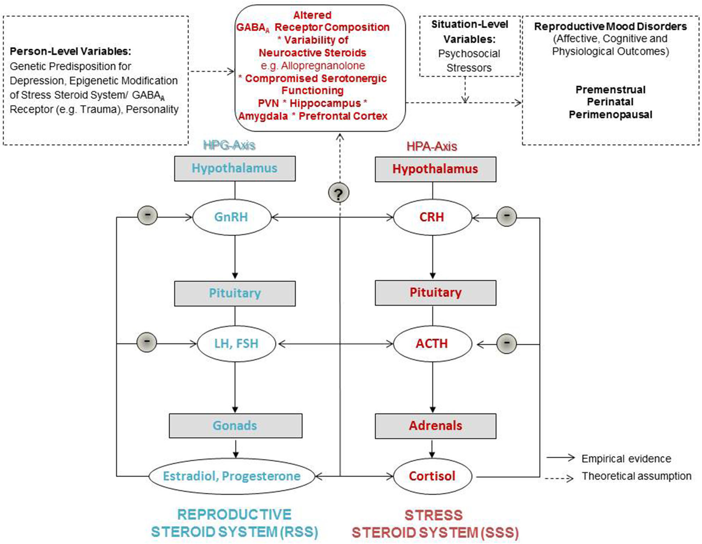

Página 2 · Síndrome pré-menstrual e síndrome disfórica pré-menstrual
Ninguém desvendou a causa. Mas dois suspeitos já têm droga
Se a causa não foi desvendada, de onde vem a lógica do tratamento? De dois suspeitos da lista — justamente os dois que já têm droga.
Multifatorial: o que a palavra realmente admite
A etiologia é considerada multifatorial até o momento. Em princípio, o quadro parece decorrer de uma interação complexa — e ainda muito pouco compreendida — entre vários sistemas. A frase não é evasiva: é o estado real do conhecimento. Não existe um mediador único cuja dosagem feche o diagnóstico, nem um exame que confirme o quadro. Isso tem uma consequência direta e agradável de aprender: o diagnóstico é clínico e criterial, não laboratorial — e o tratamento é dirigido ao sintoma que incomoda, não a uma causa que se conserta.
Os cinco grupos de suspeitos
A literatura arrola cinco grupos de mediadores nessa interação. O primeiro são os hormônios esteroides ovarianos — ou seja, estrogênio e progesterona. O segundo, os peptídeos e opioides endógenos, como as beta-endorfinas. O terceiro, as prostaglandinas. O quarto, o sistema nervoso autônomo. E o quinto, os neurotransmissores centrais — o GABA e, com destaque, a serotonina. As duas teorias que hoje organizam esses nomes dizem, em resumo, o seguinte: sensibilidade aumentada às flutuações normais de estrogênio e progesterona com disfunção do sistema serotoninérgico (a depleção de triptofano, precursor da serotonina, exacerba sintomas) e sensibilidade à alopregnanolona com participação do sistema GABAérgico. Repare no adjetivo que muda tudo: as flutuações hormonais são normais — o que difere é a sensibilidade a elas.
A pergunta sem resposta: por que umas manifestam e outras não
O que continua sem resposta é a pergunta central: por que algumas pacientes manifestam e outras não, e por que umas manifestam de forma mais grave. Isso não foi completamente desvendado. O que se sabe é que o papel é multifatorial, com essa interação complexa e ainda pouco compreendida. Há ainda uma ressalva de peso sobre a rota hormonal: a repercussão hormonal que acontece na fase lútea pode estar associada à fisiopatologia, mas isso não está bem documentado — não se conhece a real relevância. O que se observa na prática é outra coisa, e é ela que sustenta a conduta: quando se provê medicação que leva à estabilidade hormonal, há melhora.
Os dois suspeitos que pagam conduta
A lista importa por um motivo prático, e não pelo prazer de decorar seis nomes: dois dos suspeitos têm rota terapêutica. A serotonina paga duas condutas — o estímulo ao triptofano na dieta (o precursor) e os inibidores de recaptação de serotonina, a classe com eficácia comprovada nos sintomas psíquicos. Os esteroides ovarianos pagam a busca por estabilidade hormonal com contraceptivo combinado. Decorar os cinco grupos vale pouco; enxergar essas duas rotas vale a conduta inteira. Os demais mediadores — beta-endorfinas, prostaglandinas, sistema nervoso autônomo — permanecem citados, sem tradução terapêutica direta.
O que não entra: a vitamina C (e os nutrientes que entram de verdade)
A vitamina C não participa desta história. Os fatores biológicos da interação complexa são os esteroides gonadais (estrogênio e progesterona), os neurotransmissores centrais (GABA e serotonina) e os demais achados listados — não há menção a deficiência de vitamina C em nenhuma das fontes que tratam do tema. É distrator clássico de banca, e ele funciona por um motivo específico: existem, sim, nutrientes com literatura no assunto — e são outros. Cálcio e vitamina D, vitamina B6 e magnésio aparecem na discussão terapêutica (o cálcio, inclusive, com recomendação formal). A vitamina C ocupa o lugar mental desses nutrientes reais, e é por isso que soa plausível. Saber quais entram é o que imuniza contra a alternativa.

Variações fisiológicas de estradiol e progesterona podem, em pessoas suscetíveis, produzir sintomas por modulação neuroesteroidal/GABAérgica e serotoninérgica, sem exigir uma anormalidade hormonal absoluta. Leia o modelo de baixo para cima: à esquerda, o eixo hipotálamo-hipófise-gonadal termina em estradiol e progesterona; no bloco superior central aparecem os moduladores relevantes — composição do receptor GABA-A, variabilidade da alopregnanolona e comprometimento da função serotoninérgica. As setas contínuas representam relações apoiadas empiricamente; as tracejadas, hipóteses teóricas — distinção importante para não apresentar uma etiologia ainda incompleta como cascata fechada. O ponto de prova é a sensibilidade cerebral anormal a oscilações hormonais normais, não "excesso de progesterona" ou "falta de estrogênio". Eixo hipotálamo-hipófise-adrenal, cortisol e os estados perinatal e perimenopausal permanecem apenas como contexto da figura, fora do recorte ensinado aqui.
Schweizer-Schubert S, Gordon JL, Eisenlohr-Moul TA, Meltzer-Brody S, Schmalenberger KM, Slopien R, Zietlow AL, Ehlert U, Ditzen B. Steroid Hormone Sensitivity in Reproductive Mood Disorders: On the Role of the GABA-A Receptor Complex and Stress During Hormonal Transitions. Frontiers in Medicine. 2021;7:479646, Figura 1. Licenciada sob CC BY 4.0. Fonte: doi.org/10.3389/fmed.2020.479646.
Quiz — fixação
Sobre a fisiopatologia dos distúrbios pré-menstruais, não participa da interação descrita na literatura:
- Gabarito C. A vitamina C não é citada em nenhuma das teorias: as duas correntes atuais falam em sensibilidade às flutuações normais de estrogênio e progesterona com disfunção serotoninérgica, e em sensibilidade à alopregnanolona com participação GABAérgica.
- A. os esteroides gonadais são o primeiro grupo de suspeitos e sustentam a rota da estabilidade hormonal.
- B. GABA e serotonina são os neurotransmissores centrais nomeados, e a serotonina é o mediador de maior destaque — é dela que nascem o triptofano na dieta e a classe farmacológica de eleição.
- D. as prostaglandinas estão entre os grupos arrolados, ainda que sem rota terapêutica própria.
- Por que cair errando o sinal da questão. o aluno desatento marca um mediador verdadeiro porque leu "participa" em vez de "não participa" — a questão pede a exceção. E o motivo de a vitamina C soar plausível é que existem nutrientes na discussão: cálcio, vitamina D, B6 e magnésio. Trocar "existe nutriente no assunto" por "esse nutriente específico" é a armadilha.
A recomendação de estimular alimentos ricos em triptofano se justifica porque o triptofano é:
- Gabarito B. O triptofano é o precursor da serotonina — e a serotonina é o mediador com maior destaque na fisiopatologia e o alvo da classe farmacológica de eleição. A dieta ataca a mesma via que a droga: por isso a orientação tem lastro, e não é conselho genérico.
- A. confunde as duas rotas dietéticas da conduta: quem ataca a retenção hídrica é a dieta hipossódica / com substâncias diuréticas, não o triptofano.
- C. não existe relação entre triptofano e progesterona; a estabilidade hormonal vem do contraceptivo combinado, não do alimento.
- D. as prostaglandinas estão na lista de suspeitos, mas nenhuma conduta atual as tem como alvo declarado.
- Por que cair na (A). as orientações dietéticas aparecem juntas na mesma conversa, e o aluno funde "dieta" num bloco só — a disciplina que salva é lembrar que cada medida tem seu alvo: sal e diurético para a retenção, triptofano para a serotonina.
Sem exame que confirme e sem causa fechada, o diagnóstico inteiro se apoia em critério. E o primeiro deles começa por uma conjunção que muita gente lê errado.